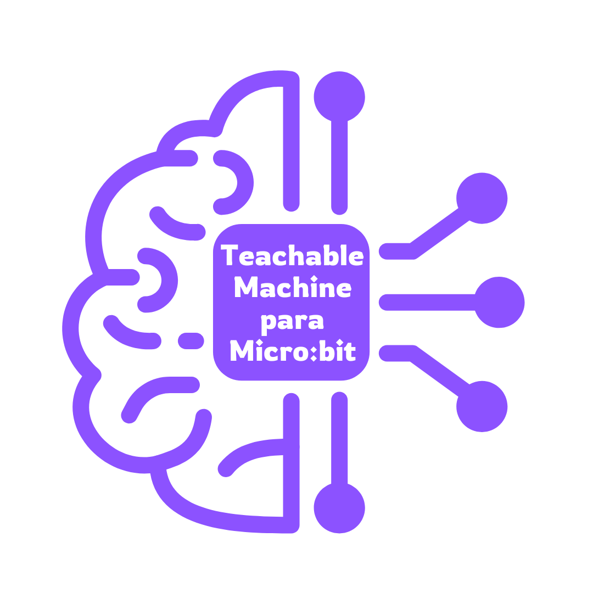

Instalá Teachable Machine
Agregá esta app a tu pantalla de inicio para acceso rápido

Entrena tu propio modelo
Pegá acá el link de tu modelo de Teachable Machine. Debe ser el link que termina con tu ID de proyecto.
Conectá tu micro:bit por Bluetooth. Asegurate de que tenga el código que recibe datos por UART.
Copia este código en MakeCode (makecode.microbit.org):